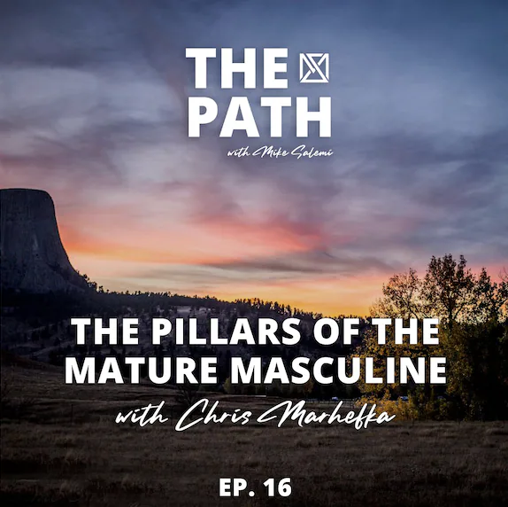

B868 · The Pillars of the Mature Masculine
Hi {first_name},
Today on the show, I have a very unique conversation with Chris Marhefka about the different phases of growth we go through in life and shedding previous identities. Chris has seen a high level of success in his business endeavors and is now going through a transition into stepping into the unknown and following his calling to facilitate personal growth experiences for others. We dive deep into men’s self-development, a new way of leading, resistance to trusting ourselves, and showing up in full integrity.
In Episode #16 of The Path, Chris and I discuss:
 Click here to listen on Spotify. Click here to listen on Apple.
If you are enjoying the show please subscribe and leave a review. Your support is always appreciated.
Thank you! Mike |